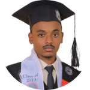

|  |
|
I am Biomedical Engineering graduate from Addis Ababa University trained and highly prepared to ensure the quality, safety and/or efficacy of medical devices and other related roles. I am equipped with current digital technologies that can help solve problems technically and efficiently through time saving approaches. I think in terms of results and objectives, I am enthusiastic, and I work with decisiveness and conviction. I am team player and leader in accomplishing tasks.
| 2014 – 2019 |
BSc in Biomedical Engineering Addis Ababa University, Addis Ababa (Ethiopia)
|
| 2018 – 2018 |
Biomedical Equipment Troubleshooting Workshop Certification Addis Ababa Institute of Technology, Addis Ababa (Ethiopia)
|
| 2018 – 2018 |
Internship St. Pauls Millenium Medical College, Addis Ababa (Ethiopia)
|
| 2018 – 2018 |
Volunteer Works Thought Mathematics and English at primary school
|
Reference: Mekdes Seyoum (My advisor at the center of Biomedical Engineering, Addis Ababa Institute of Technology).
|
mekdisseyoum@gmail.com |
|
+251 912 41 97 31 |